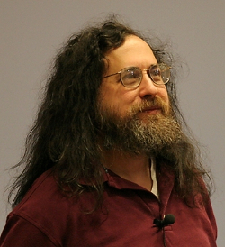
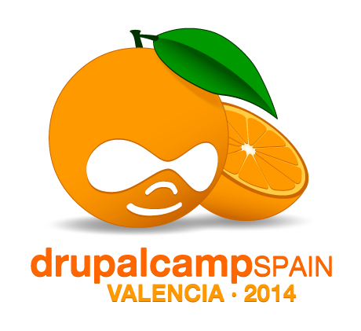

Drupal
¿Qué puede hacer Drupal por mí?
¿Quién soy?
- Carlos Reig
- Ingeniero informático por la ETSE-UV
- Miembro de la Asociación Española de Drupal

- http://asociaciondrupal.es/
- @unstatu
¿Qué vamos a hacer hoy?
- Hablar un poquito sobre software libre, CMSs y dónde encaja Drupal
- ¿Y hay trabajo de esto?
- ¡Manos a la obra!
- Vista aérea alrededor de Drupal
- Money, money, money
Software libre
«Software libre» es el software que respeta la libertad de los usuarios y la comunidad. En grandes líneas, significa que los usuarios tienen la libertad para ejecutar, copiar, distribuir, estudiar, modificar y mejorar el software. Es decir, el «software libre» es una cuestión de libertad, no de precio. Para entender el concepto, piense en «libre» como en «libre expresión», no como en «barra libre».
Ejemplos de software libre
- LINUX
- Apache ~ 50%
- sendmail, postfix, qmail... ~ 70%
- NodeJS
- Apache Cordova
- GIMP, LibreOffice, MariaDB y muchos más
Y, por supuesto, Drupal.
¿Qué es un CMS?
Un sistema de gestión de contenidos o CMS es un programa que permite crear una estructura de soporte para la creación y administración de contenidos, principalmente en páginas web, por parte de los administradores, editores, participantes y demás usuarios.
CMS más famosos
- Drupal (el primero, cómo no ;))
- Wordpress
- Joomla
- Moodle
- MediaWiki
- Y muchos más
Drupal es más que un CMS
Nuevo nombre: CMF
(Content Management Framework)
Drupal sobretodo es una comunidad
Vendrás por el código y te quedarás por la comunidad¿Quién usa Drupal?
Drupal se usa en más de 1 millón de sitios web.
Representa un ~7% de todos las webs basadas en CMS
Los casos más sonados son...
- La casa blanca
- Museo Louvre & Museo Reina Sofía
- Twitter & Paypal Developers Sites
- ING.us
- Ubuntu
- The Economist
- Tienda de UNICEF
- Generalitat de Catalunya
- idealista.com/news
Drupal 8 está al caer

¿Y hay trabajo de Drupal?
En España tenemos...
- 440 ofertas de trabajo buscando "PHP"
- 59 ofertas de trabajo buscando "Drupal"
El CV no está de moda
Tener un buen CV no es tan importante como antes.
Las empresas TIC empiezan a usar otros métodos de reclutamiento:
- GitHub
- StackOverflow
- Participación en eventos
- Y, por supuesto, Drupal.org
Es tiempo de demo
Vamos a hacer una galería de arte
¿Qué hay alrededor de Drupal?
- Módulos: proporcionan nuevas funcionalidades al sistema
- Themes: para cambiar la apariencia del sitio
- Distribuciones: paquetes preconfigurados, tiendas, webs de noticias..
Módulos más utilizados
- Views
- Context
- Features
- Commerce
- Y muchos más
¿He oído commerce?
A ver qué tal va
¿Te gusta lo que has visto?
DrupalCamp 2014 Valencia
16, 17 y 18 de mayo
Código de descuento: DCVALENCIA-STUDENT
- Charlas técnicas
- Charlas diseño
- Charlas sistemas
- Ronda de job speed dating con empresas
- Formación intensiva con talleres
- Y mucha comunidad